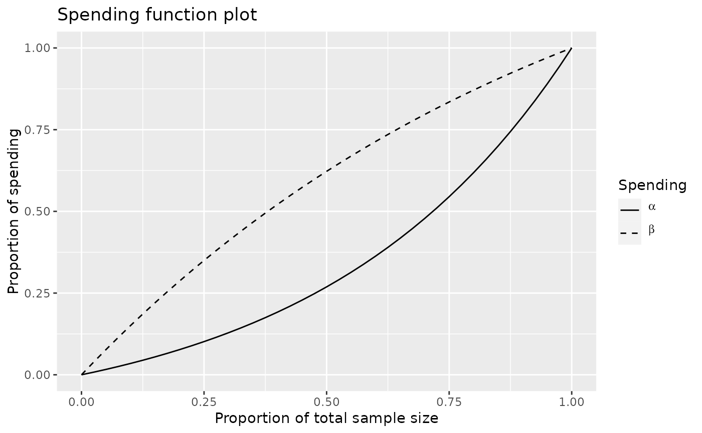

Spending_Function_Overview.RdSpending functions are used to set boundaries for group sequential designs. Using the spending function approach to design offers a natural way to provide interim testing boundaries when unplanned interim analyses are added or when the timing of an interim analysis changes. Many standard and investigational spending functions are provided in the gsDesign package. These offer a great deal of flexibility in setting up stopping boundaries for a design.
| alpha | Real value \(> 0\) and no more than 1. Defaults in calls to
|
|---|---|
| t | A vector of points with increasing values from 0 to 1, inclusive. Values of the proportion of sample size/information for which the spending function will be computed. |
| param | A single real value or a vector of real values specifying the spending function parameter(s); this must be appropriately matched to the spending function specified. |
| object | A spendfn object to be summarized. |
| ... | Not currently used. |
spendingFunction and spending functions in general produce an
object of type spendfn.
A character string with the name of the spending function.
any parameters used for the spending function.
a character string or strings with the name(s) of
the parameter(s) in param.
the spending function specified.
a vector of cumulative spending values
corresponding to the input values in t.
this is null
when returned from the spending function, but is set in gsDesign() if
the spending function is called from there. Contains z-values for bounds of
a design.
this is null when returned from the spending
function, but is set in gsDesign() if the spending function is called
from there. Contains probabilities of boundary crossing at i-th
analysis for j-th theta value input to gsDesign() in
prob[i,j].
The summary() function for spendfn objects provides a brief
textual summary of a spending function or boundary used for a design.
Spending functions have three arguments as noted above and return an object
of type spendfn. Normally a spending function will be passed to
gsDesign() in the parameter sfu for the upper bound and
sfl for the lower bound to specify a spending function family for a
design. In this case, the user does not need to know the calling sequence -
only how to specify the parameter(s) for the spending function. The calling
sequence is useful when the user wishes to plot a spending function as
demonstrated below in examples. In addition to using supplied spending
functions, a user can write code for a spending function. See examples.
The manual is not linked to this help file, but is available in library/gsdesign/doc/gsDesignManual.pdf in the directory where R is installed.
Jennison C and Turnbull BW (2000), Group Sequential Methods with Applications to Clinical Trials. Boca Raton: Chapman and Hall.
library(ggplot2) # Example 1: simple example showing what mose users need to know # design a 4-analysis trial using a Hwang-Shih-DeCani spending function # for both lower and upper bounds x <- gsDesign(k=4, sfu=sfHSD, sfupar=-2, sfl=sfHSD, sflpar=1) # print the design x#> Asymmetric two-sided group sequential design with #> 90 % power and 2.5 % Type I Error. #> Upper bound spending computations assume #> trial continues if lower bound is crossed. #> #> Sample #> Size ----Lower bounds---- ----Upper bounds----- #> Analysis Ratio* Z Nominal p Spend+ Z Nominal p Spend++ #> 1 0.324 0.03 0.5136 0.0350 2.80 0.0025 0.0025 #> 2 0.649 0.88 0.8096 0.0273 2.58 0.0049 0.0042 #> 3 0.973 1.51 0.9349 0.0212 2.34 0.0096 0.0069 #> 4 1.297 2.09 0.9817 0.0165 2.09 0.0183 0.0114 #> Total 0.1000 0.0250 #> + lower bound beta spending (under H1): #> Hwang-Shih-DeCani spending function with gamma = 1. #> ++ alpha spending: #> Hwang-Shih-DeCani spending function with gamma = -2. #> * Sample size ratio compared to fixed design with no interim #> #> Boundary crossing probabilities and expected sample size #> assume any cross stops the trial #> #> Upper boundary (power or Type I Error) #> Analysis #> Theta 1 2 3 4 Total E{N} #> 0.0000 0.0025 0.0042 0.0065 0.0072 0.0203 0.5477 #> 3.2415 0.1695 0.3553 0.2774 0.0978 0.9000 0.7533 #> #> Lower boundary (futility or Type II Error) #> Analysis #> Theta 1 2 3 4 Total #> 0.0000 0.5136 0.3156 0.1169 0.0336 0.9797 #> 3.2415 0.0350 0.0273 0.0212 0.0165 0.1000#> [1] "Hwang-Shih-DeCani spending function with gamma = -2"#> [1] "Hwang-Shih-DeCani spending function with gamma = 1"# what happens to summary if we used a boundary function design x <- gsDesign(test.type=2,sfu="OF") y <- gsDesign(test.type=1,sfu="WT",sfupar=.25) summary(x$upper)#> [1] "O'Brien-Fleming boundary"#> [1] "Wang-Tsiatis boundary with Delta = 0.25"# Example 2: advanced example: writing a new spending function # Most users may ignore this! # implementation of 2-parameter version of # beta distribution spending function # assumes t and alpha are appropriately specified (does not check!) sfbdist <- function(alpha, t, param) { # check inputs checkVector(param, "numeric", c(0, Inf), c(FALSE, TRUE)) if (length(param) !=2) stop( "b-dist example spending function parameter must be of length 2") # set spending using cumulative beta distribution and return x <- list(name="B-dist example", param=param, parname=c("a", "b"), sf=sfbdist, spend=alpha * pbeta(t, param[1], param[2]), bound=NULL, prob=NULL) class(x) <- "spendfn" x } # now try it out! # plot some example beta (lower bound) spending functions using # the beta distribution spending function t <- 0:100/100 plot(t, sfbdist(1, t, c(2, 1))$spend, type="l", xlab="Proportion of information", ylab="Cumulative proportion of total spending", main="Beta distribution Spending Function Example")legend(x=c(.65, 1), y=1 * c(0, .25), lty=1:4, legend=c("a=2, b=1","a=6, b=4","a=0.5, b=0.5","a=0.6, b=2"))